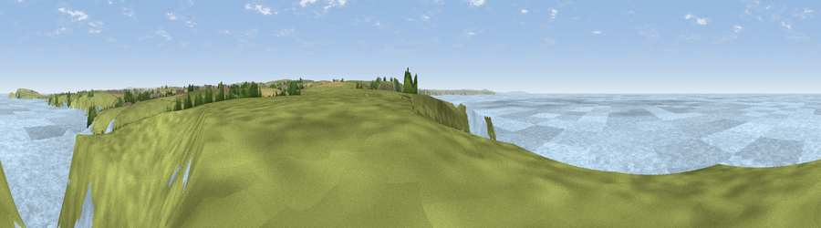

Viewpoint near Treyarnon
#11718 in England · top 27% of its area beats it · near TreyarnonWhere it is
The exact computed spot (SW 84425 71325). Click the marker for map links.
The view, rendered

A 360° render of this exact spot computed from the terrain model, tree cover and land cover — summer colours, afternoon light, calibrated against photographs of famous viewpoints. Real trees, hedges and buildings will differ in detail.
The panorama
Grey silhouette: terrain skyline in each direction (720 bearings, Earth curvature and refraction included). Dashed green: skyline with trees (+15 m) and buildings (+8 m) as obstacles. Blue strip: how far the ground is visible on each bearing.
Where the view opens
Wedge length = distance to the farthest visible ground on that bearing (vegetation-aware). Rings at 10, 25 and 50 km.
What fills the view
81% water · 18% grassland ·
Angular shares of the visible panorama (visual magnitude), not map area. Landscape diversity 0.23 (0–1 Shannon).
Key numbers
More beautiful places nearby
The staircase of upgrades: each row has a higher view potential than everything closer. Driving times are estimates from straight-line distance, calibrated against real road routing — check an actual route before setting out.
| Place | Direction | Drive | Score |
|---|---|---|---|
| Viewpoint near Trenance | S · 3 km | ~7 min | 71.2 |
| Trevose Head | N · 5 km | ~11 min | 72.3 |
| Viewpoint near St Eval | ESE · 6 km | ~13 min | 73.2 |
| Viewpoint near St Eval | ESE · 7 km | ~14 min | 78.3 |
| Penhale Hill | SSE · 16 km | ~28 min | 80.3 |
| Viewpoint near Penhale | SSE · 17 km | ~30 min | 81.7 |
| Viewpoint near Nanpean | SE · 20 km | ~34 min | 84.2 |
| Viewpoint near Stenalees | SE · 21 km | ~35 min | 88.0 |
50.50195, -5.04131 · source: screening · position refined by local search. Computed location — check access rights before visiting.